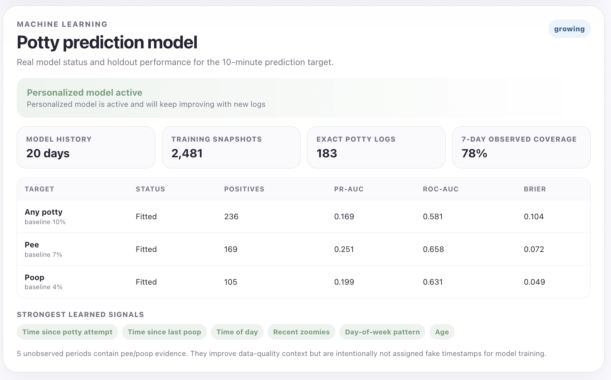
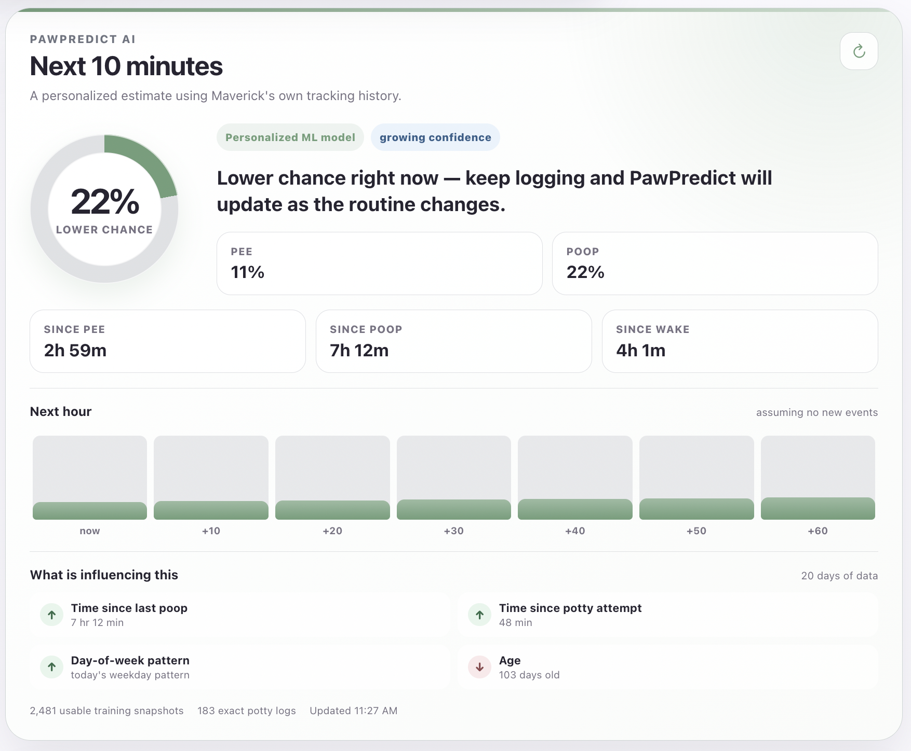
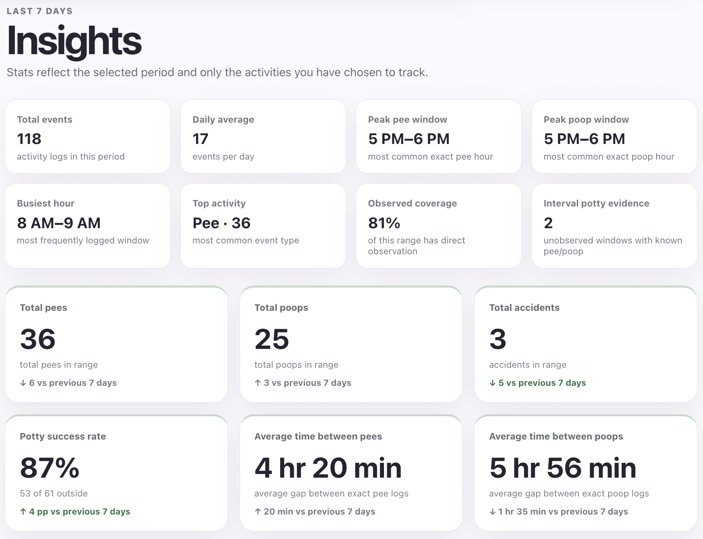
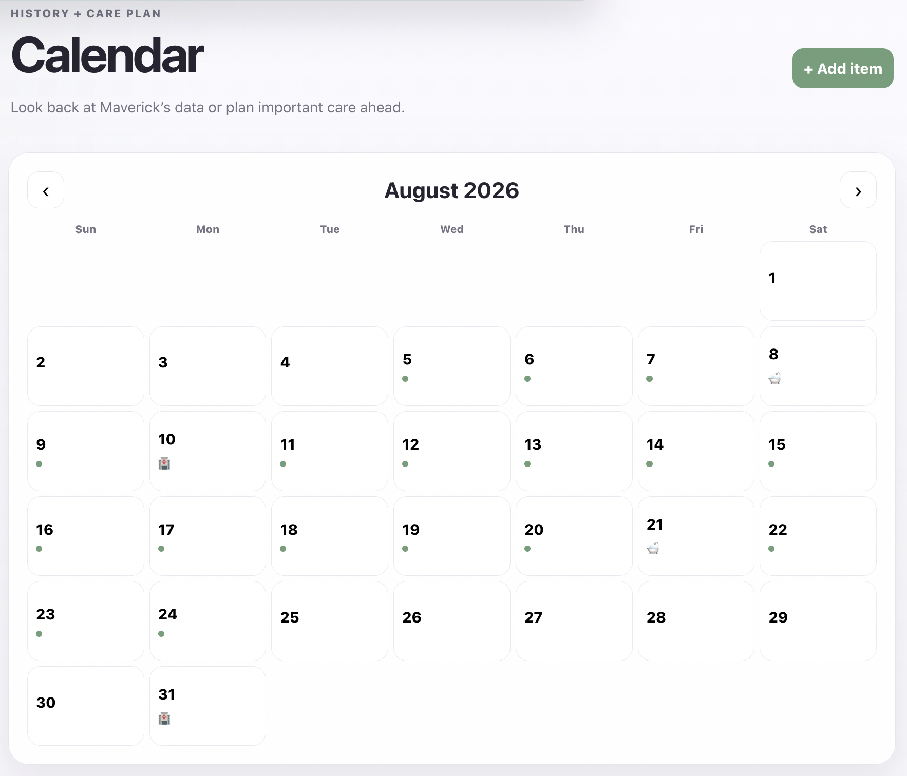

PawPredict
Personalized Puppy Intelligence
Full-Stack Application • Behavioral Analytics • Machine Learning • Product Design
From Everyday Problem to End-to-End Product
PawPredict began with a simple question: Can a puppy's behavior be learned well enough to predict when they need to go outside?
Rather than training a model on a static public dataset, I built the entire data-generating system from scratch. PawPredict is a deployed, mobile-first behavioral tracking platform that collects longitudinal puppy activity, transforms raw logs into structured time-series features, surfaces personalized behavioral insights, and estimates the probability of a potty event occurring within the next 10 minutes.
The project spans the complete machine-learning product lifecycle: product design, relational data modeling, frontend engineering, API development, behavioral data collection, feature engineering, model evaluation, deployment, and iterative model improvement.
The Core Product
PawPredict was designed around a key constraint that traditional datasets rarely capture: real-life behavioral data is incomplete. A dog may be sleeping overnight, home alone while the owner is working, or using a litter box outside an observed window. Treating these periods as ordinary negative examples would create incorrect training labels.
I therefore designed the application to distinguish between events that are known precisely, behavior known only within a time interval, and periods where the dog was not directly observed. This allows the prediction pipeline to preserve uncertainty rather than silently converting missing information into false data.
System Architecture
I developed PawPredict as a modular three-tier application so that data collection, analytics, and machine learning could evolve independently without rebuilding the product.
PAWPREDICT ARCHITECTURE
┌─────────────────────────────────────────────────────────┐
│ React + TypeScript │
│ │
│ Quick Log Calendar Insights Settings │
│ │ │ │ │ │
│ └─────────────┴────────────┴────────────┘ │
│ │ │
└───────────────────────────┼──────────────────────────────┘
│ REST API
▼
┌─────────────────────────────────────────────────────────┐
│ FastAPI Backend │
│ │
│ Event APIs Analytics ML Prediction │
│ Calendar APIs Aggregation Feature Pipeline │
│ Dog Profiles Validation Model Evaluation │
│ │
└───────────────────────────┼──────────────────────────────┘
│ SQLAlchemy
▼
┌─────────────────────────────────────────────────────────┐
│ Supabase PostgreSQL │
│ │
│ Dogs • Events • Observation Periods • Preferences │
│ Calendar Items • Tracking Options • UI Configuration │
│ │
└───────────────────────────┼──────────────────────────────┘
│
▼
┌─────────────────────────────────────────────────────────┐
│ Personalized ML Pipeline │
│ │
│ Historical Logs → Feature Engineering → Training │
│ → Evaluation → Live Probability │
└─────────────────────────────────────────────────────────┘
Behavioral Data Engineering
The largest technical challenge was not selecting an algorithm—it was designing data that a model could trust. Puppy activity is inherently temporal, partially observed, and dependent on previous events, so PawPredict uses an event-driven schema rather than a conventional flat training table.
- Timestamped Event Logging: Structured events capture behaviors including pee, poop, potty attempts, naps, nighttime sleep, zoomies, treats, baths, and veterinary activity.
- Observation-Aware Data: Periods when the dog is unattended are stored explicitly rather than interpreted as inactivity. Pee or poop discovered afterward can be associated with the interval without fabricating an exact timestamp.
- Cross-Midnight Session Logic: Sleep sessions are treated as continuous intervals and correctly allocated across calendar days instead of incorrectly assigning the full duration to the day on which sleep began.
- Configurable Event Taxonomy: Tracking behavior is metadata-driven, allowing events, options, statistics, and charts to evolve without hard-coding every interaction into the interface.
- Data Quality Preservation: Unknown behavior remains unknown. The system avoids converting unobserved periods into false negative training examples, reducing label contamination before modeling begins.
Personalized Machine Learning
The primary predictive task is framed as a rolling binary classification problem: Given everything known at the current moment, will a potty event occur within the next 10 minutes?
Instead of treating each logged event as one training row, PawPredict reconstructs historical behavioral state at regular time snapshots. Each snapshot represents what would have been known at that exact moment, preventing future information from leaking backward into the feature set.
Historical Behavioral Timeline
│
▼
5-Minute State Snapshots
│
▼
┌───────────────────────────────┐
│ Feature Engineering │
│ │
│ • Minutes since last pee │
│ • Minutes since last poop │
│ • Minutes since waking │
│ • Recent potty attempts │
│ • Recent behavioral activity │
│ • Pee / poop counts today │
│ • Hour-of-day signals │
│ • Day-of-week signals │
│ • Observation state │
│ • Puppy age │
└───────────────┬───────────────┘
│
▼
Chronological Training
│
▼
Logistic Regression
│
┌────────┴────────┐
▼ ▼
Model Evaluation Live State
│ │
└────────┬────────┘
▼
P(Potty in Next 10 Min)
Why Logistic Regression First?
The initial production model intentionally uses Logistic Regression rather than jumping immediately to a complex ensemble. With a growing personalized dataset, model interpretability and calibration are more useful than maximizing training performance on a small sample.
The architecture supports separate models for:
- Any Potty: probability of either pee or poop occurring within 10 minutes.
- Pee: probability of a pee event within 10 minutes.
- Poop: probability of a poop event within 10 minutes.
PawPredict evaluates classification performance using metrics appropriate for an imbalanced behavioral target, including Precision-Recall AUC, ROC-AUC, and Brier Score. Because the objective is a usable probability—not simply a correct class label—the Brier Score provides an important measure of probability calibration.

Live Prediction Experience
The machine-learning pipeline is integrated directly into the application rather than existing only inside a notebook. The Today dashboard requests the dog's current behavioral state from the FastAPI backend and returns live personalized estimates.

When sufficient training history is not yet available, the interface intentionally avoids presenting an immature model as reliable. Instead, it displays a clearly labeled early personalized estimate derived from the dog's observed routine. Once the dataset reaches the training threshold, the application automatically transitions to the fitted machine-learning model.
Analytics & Explainability
PawPredict extends beyond prediction by turning longitudinal event data into an interactive behavioral analytics dashboard. Users can switch between Today, 7-day, 30-day, all-time, and custom ranges while the displayed metrics adapt to the meaning of the selected period.
- Potty Timing: hourly pee and poop distributions reveal recurring high-risk windows.
- Potty Outcomes: tracks successful potty locations and accidents over time.
- Behavioral Trends: activity levels can be analyzed across days and times of day.
- Sleep Analytics: interval-based duration calculations correctly account for sessions spanning midnight.
- Observation Coverage: distinguishes collected behavioral data from periods where behavior was unknown.
- Model Reporting: exposes validation metrics, positive training examples, dataset size, and influential model features.
Users can also customize which statistics and charts appear in Insights and select a global application accent color, with preferences persisted in PostgreSQL.

Calendar & Longitudinal History
Because behavioral modeling improves with time, historical accessibility was treated as a core product requirement rather than an afterthought. PawPredict includes a dedicated calendar interface that separates routine behavioral logs from scheduled care events.
- Historical Drill-Down: Selecting a date reveals that day's complete event timeline and daily analytics without cluttering the calendar itself.
- Future Planning: Veterinary appointments, grooming, baths, and other care items can be scheduled independently of completed historical events.
- Longitudinal Exploration: The same dataset powering machine learning can be explored manually to identify behavioral changes and recurring patterns.

Product & UX Engineering
PawPredict was built primarily for mobile use because behavioral data needs to be captured at the moment it happens. The interface therefore prioritizes low-friction logging rather than traditional form-based data entry.
- Inline Quick Logging: Selecting an event expands its relevant controls directly beneath the chosen action rather than forcing the user to scroll to a separate form.
- Dynamic Forms: Location, state, numeric measurements, severity, and custom options appear only when supported by the selected event type.
- Editable Timeline: Historical events can be corrected or deleted to prevent logging mistakes from contaminating downstream analytics.
- Personalized Dashboard: Users choose which statistics and visualizations matter to them and control their ordering.
- Responsive Navigation: Today, Calendar, Insights, and Settings are organized as distinct application workflows for fast mobile navigation.
Cloud Deployment
The application was designed as a deployable production system rather than a local prototype:
Frontend
React + TypeScript + Vite
│
▼
Vercel
│
▼
HTTPS / REST
│
▼
Render
FastAPI + Python
│
▼
Supabase
PostgreSQL Cloud Database
This separation allows the user interface, API layer, database schema, and machine-learning system to evolve independently while maintaining a production deployment workflow through Git and GitHub.
Technology Stack
Frontend
React
TypeScript
Vite
Recharts
Responsive CSS
Backend
Python
FastAPI
SQLAlchemy
Pydantic
REST APIs
Data & ML
PostgreSQL
Supabase
Scikit-Learn
NumPy
Feature Engineering
Engineering
Git / GitHub
Vercel
Render
Database Migrations
API Documentation
From Prediction to Decision Support
The long-term objective is not simply to display a probability. PawPredict is designed to translate behavioral predictions into actionable recommendations.
Behavioral History
+
Current Context
│
▼
Potty Risk Model
│
▼
Risk Forecast
│
▼
Recommended Potty Window
│
▼
Personalized Routine
As additional longitudinal data accumulates, PawPredict can evaluate whether machine-learning predictions outperform simpler behavioral heuristics such as fixed intervals after waking or previous potty events. This provides a measurable baseline for determining whether increasing model complexity actually improves real-world decision support.
Why This Project Is Different
Many machine-learning projects begin with a clean dataset and end with a notebook. PawPredict required building everything that happens before and after the model.
I had to determine what information should be collected, design the relational schema, create the logging experience, handle uncertainty and missing observation windows, engineer temporal features without leakage, expose predictions through an API, visualize them inside a production frontend, and create a system capable of improving as new behavioral data arrives.
The result is not simply a classifier—it is a full-stack personalized machine-learning product.
Future Product Direction
PawPredict currently learns from an individual dog's behavioral history, but the underlying architecture was designed with a broader question in mind: Can a short period of structured observation be used to learn a personalized routine for any dog?
A future multi-user version could combine individualized models with population-level patterns, allowing new users to begin with generalized priors before progressively transitioning toward predictions learned from their own dog's behavior. The same framework could eventually support personalized potty recommendations, routine detection, behavioral anomaly detection, and adaptive scheduling.
Key Takeaway
PawPredict demonstrates the complete path from an unstructured real-world problem to a deployed intelligent product. It combines software engineering, data architecture, behavioral analytics, machine learning, UX design, and product thinking in a single continuously evolving system—while preserving one of the most important principles in applied data science: the quality of a prediction begins with the quality of the data-generating process.